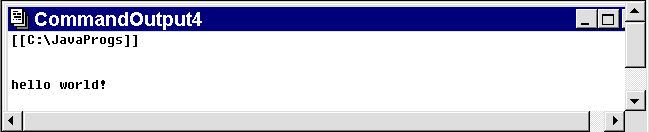

Re-Compiling and executing
The corrected source code can be re-compiled by
pressing the Execute button on the tool bar and confirming
the action by pressing the OK button on the Execute Dos …
dialog which is posted.
A DOS shell will be spawned as before and the javac
compilation command executed. Assuming that no compilation errors
occur the CommandOutput box will be empty.
The resulting class file (PfeDemo.class)
file can be executed by posting the Execute Dos …
dialog again and changing the Command to java %n.
The program will be executed and the output
captured in a CommandOutput window.
